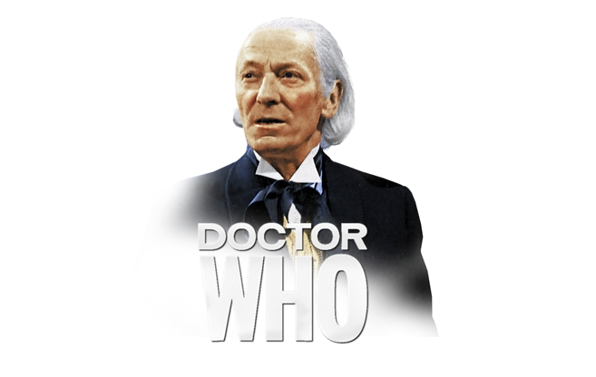

1º Doctor
O Doutor original.
"S01A01 – The Innocent" Sinopse: Enquanto os Daleks formam sua frota temporal para um ataque final a Gallifrey, algo antigo está esperando por eles em Omega One. E um sacrifício deverá ser feito. Cardeal Ollistra, uma Time Lady estrategista e manipuladora, recebe a chocante noticia da morte do Doctor. Enquanto isso, no planeta Keska, uma guerra volta a atormentar uma civilização pacífica depois de décadas de tranquilidade. Mas como essa guerra pode ter qualquer ligação com a grande Guerra do Tempo que, em qualquer momento da eternidade, pode ameaçar destruir todo o universo? Se o Doctor ainda estivesse vivo… Elenco: Doctor da Guerra – John Hurt Cardeal Ollistra – Jacqueline Pearce Rejoice – Lucy Briggs-Owen Veklin – Beth Chalmers Bennus – Kieran Hodgson Arverton – Barnaby Edwards Daleks – Nicholas Briggs Seratrix – Alex Wyndham Online Legendado: Openload MKV Legendado: MEGA S01A02 – The Thousand Worlds Publicado em 31/01/2020 •Editar "S01A02 – The Thousand Worlds" Sinopse: Com Seratrix, o Time Lord de alto escalão por trás das linhas inimigas, o Doctor da Guerra encontra-se atribuído a uma missão de resgate, mas qualquer tentativa de resgate é severamente restringida por uma área do espaço conhecida como Zona Nula. O tempo passou em Keska, e a contagem regressiva para a destruição começou, mas quem são os Taalyenos e qual é a sua parte nesse grandioso plano Dalek? Elenco: War Doctor – John Hurt Cardeal Ollistra – Jacqueline Pearce Rejoice – Lucy Briggs-Owen A Escrava – Carolyn Seymour Veklin – Beth Chalmers Bennus – Kieran Hodgson Arverton – Barnaby Edwards Daleks – Nicholas Briggs Seratrix – Alex Wyndham Traanus – Mark McDonnell Garv – John Banks Online Legendado: Openload MKV Legendado: MEGA S01A03 – The Heart of the Battle Publicado em 31/01/2020 •Editar "S01A03 – The Heart of the Battle" Sinopse: Preso em uma cidadela cheia de Daleks, o grupo de resgate deve encontrar uma maneira de superar as probabilidades insuperáveis. Com os Daleks aparentemente planejando dominar a Zona Nula, talvez a sua conquista universal esteja finalmente sendo concluída… O Doctor da Guerra não acredita nisso, mas como ele pode desfazer esse plano sem destruir qualquer chance de paz? Enquanto a contagem regressiva da destruição de Keska continua, uma escolha mortal deve ser feita… Uma escolha que irá definir esse Doctor, e talvez estipular ele no papel de “monstro”. Elenco: War Doctor – John Hurt Cardeal Ollistra – Jacqueline Pearce Rejoice – Lucy Briggs-Owen A Escrava – Carolyn Seymour Veklin – Beth Chalmers Bennus – Kieran Hodgson Arverton – Barnaby Edwards Daleks – Nicholas Briggs Seratrix – Alex Wyndham Traanus – Mark McDonnell Garv – John Banks Online Legendado: Openload MKV Legendado: MEGAArtigo Escrito por Dhannyllo Souza